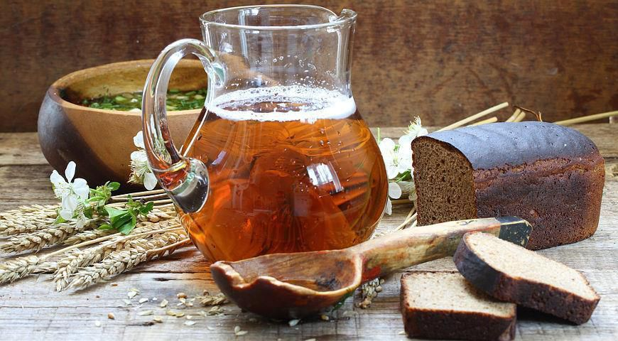
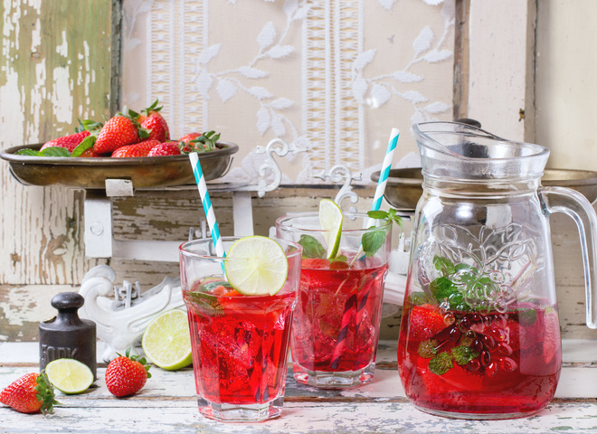
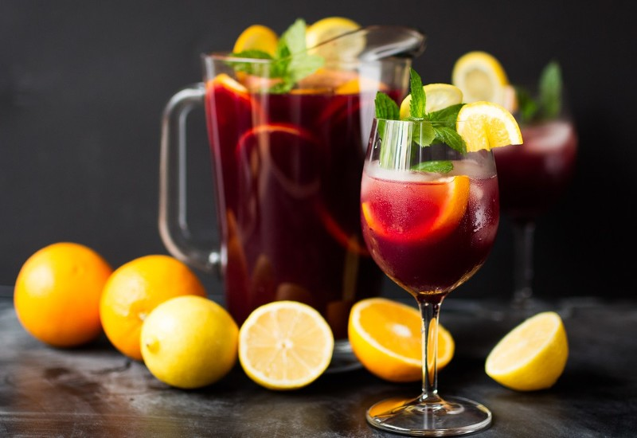

Розглянемо такі напої, як:
- Квас з житнього хліба без дріжджів
- Полуничний лимонад
- Коктейль HUGO з лимонадом
- Мохіто
- Сангрія
- Фруктовий пунш
- Холодна кава
Квас з житнього хліба без дріжджів
Інгредієнти на одну порцію квасу:
- житній хліб - 300 гр;
- цукор - 100-150 гр;
- питна вода - 2 л;
- родзинки - 25 гр.
Приготування:
Хліб нарізаємо невеликими скибочками, трохи підсушуємо їх в духовій шафі до утворення скоринки і характерного аромату (якщо занадто пересмажити сухарі, то у напою може з’явитися неприємна гіркота). Хліб заливаємо крутим окропом, всипаємо норму цукру і розмішуємо.
Коли суміш охолоне до 20-25 C, переливаємо її в банку, додаємо родзинки і залишаємо в теплі і темряві для бродіння. Після появи кислуватого запаху і піни на поверхні рідини витримуємо напій ще два-три дні і відфільтровуємо, за необхідності додаємо цукор.
Переливаємо в пластикові пляшки, залишаючи 5-6 см до горлечка. Пляшкам даємо постояти в теплі, потім охолоджуємо протягом чотирьох годин, і напій готовий. Термін зберігання такого квасу – не довше 5 днів навіть в холодильнику.
Полуничний лимонад
Інгредієнти:
- полуниця - 200 гр;
- лимон - 1 шт;
- базилік - 2 гілочки;
- газована вода - 1 літр;
- цукор - 1 склянка.
Приготування:
Заливаємо лимон гарячою водою та даємо настоятися, щоб зменшити гіркоту цедри. Засипаємо полуницю цукром та збиваємо у блендері. Додаємо до отриманого полуничного пюре подрібнений базилік (за бажанням можна не використовувати базилік при приготувані напою).
Заливаємо газованою водою і залишаємо настоюватися у холодильнику. Ретельно знімаємо шкірку з лимона. Нарізаємо кільцями одну його половину, а з іншої — вичавлюємо сік, після чого проціджуємо ароматну суміш. На дно глечика кладемо гілочку базиліка, шматочки лимона, лід і полунично-базилікову суміш.
Коктейль HUGO з лимонадом
Інгредієнти для однієї порції:
- сироп з бузини - 20 мл;
- домашній лимонад - 200 мл;
- кілька листочків м'яти;
- 2-3 скибки лайма;
- кубики льоду.
Приготування:
До охолодженого келиха додаємо м'яту і трохи розминаємо. Додаємо сироп із бузини, наливаємо лимонад. Насамкінець кладемо лід та лайм і насолоджуємося холодним напоєм.
Мохіто
Інгредієнти:
- 5-7 гілочок свіжої мяти;
- дрібно нарізаний лайм;
- шматочоки нарізаного лимону;
- «Спрайт» або мінеральна вода (залежно від смакових уподобань) - 1,5 літр;
- кубики льоду.
Приготування:
М'яту 5-7 гілочок легенько розминаємо, додаємо лайм та маленький шматочок лимону. Заливаємо «Спрайтом» або мінаральною водою (якщо використовувати звичайну мінералку, то варто додати чайну ложечку цукру). Додаємо шматочки льоду, напій готовий.
Сангрія
Інгредієнти:
- консервовані або свіжі персики – 200 гр;
- лимон – 0,5 шт.;
- апельсин – 0,5 шт.;
- груша – 1 шт.;
- виноградний сік (краще використовувати домашній) – 1 л;
- газована вода зі смаком винограду – 0,5 л;
- листочки свіжої м’яти.
Приготування:
Мінеральну воду попередньо охолоджуємо. Лимон, апельсин та персики нарізаємо невеликими шматочками. Грушу ретельно чистимо від шкірки та нарізаємо кубиками. Дрібно нарізаємо м’яту.
На дно глечика викладаємо м’яту та фрукти, потім заливаємо все виноградним соком.
Суміш ставимо в холодильник на 40 хвилин. Перед подачею додаємо до напою охолоджену мінеральну воду зі смаком винограду.
Фруктовий пунш
Інгредієнти:
- апельсиновий сік – 1 склянка;
- ананасовий сік – 1 склянка;
- грейпфрутовий сік – 1 склянка;
- апельсин/грейпфрут/помело/лайм/лимон (можна використати все, або обрати шматочки саме того, що подобається саме вам);
- шматочки льоду;
- вишні (свіжі або консервовані, проте рекомендуємо обирати свіжі) – 10 шт.;
- цукор – 3 ст. ложки.
Приготування:
Змішуємо соки, додаємо цукор і заливаємо у глечик чи одразу до склянок. Нарізаємо фрукти, видаляємо кісточки з вишень та додаємо в склянки за смаком.
Холодна кава
Інгредієнти:
- заварена кава;
- цукор;
- молоко;
- шматочки льоду.
Приготування:
Заварюємо каву за вашим смаком та чекаємо поки вона охолоне.